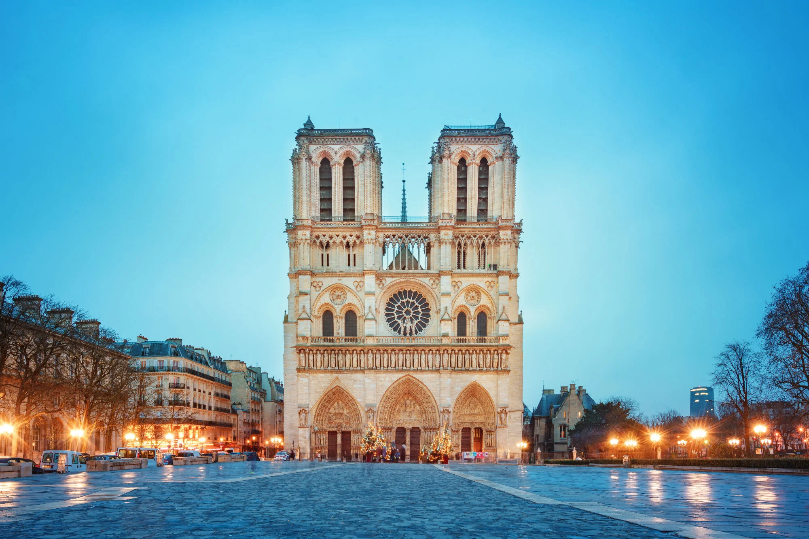

Amsterdã, a capital dos Países Baixos, é uma cidade famosa por seus canais, museus e cultura vibrante. Conhecida como a "Veneza do Norte", Amsterdã possui uma arquitetura única, com casas estreitas e inclinadas ao longo dos canais. A cidade é um centro de arte e história, abrigando museus renomados como o Rijksmuseum e o Museu Van Gogh. Além disso, Amsterdã é famosa por sua vida noturna animada, cafés aconchegantes e uma atmosfera descontraída, tornando-se um destino popular para turistas de todo o mundo.
Na imagem acima, podemos ver os belos canais de Amsterdã, que são Patrimônio Mundial da UNESCO e oferecem passeios de barco pitorescos.

Na imagem acima, podemos ver o Arco do Triunfo, outro ícone de Amsterdã, que homenageia aqueles que lutaram e morreram pela cidade durante a Guerra Civil Espanhola.

Na imagem acima, podemos ver a Catedral de Notre-Dame, um dos exemplos mais notáveis da arquitetura gótica, famosa por seus vitrais deslumbrantes e sua história rica, incluindo eventos como a coroação de Napoleão Bonaparte.
Assim como Berlim, Dubai também é conhecida por sua arte e cultura.
Quer saber mais sobre Amsterdã? Clique aqui